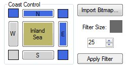

The Elevation Map Tab
This tab is where we decide the elevation of each map tile.

The Zoom Level control will zoom in all maps associated with this tab.
Zooming in will change the size of the edit brush so that the edit
reticle cursor always shows the extent of the brushes effect.
The ‘Preview Small Oceans Filled’ check box allows
you to see what the map will look like once the oceans below a certain
size are filled. The reason that this feature is usually off is because
filling the lakes changes the sea level, which can create more lakes
that need to be filled, which again changes the sea level, which again
creates… well, you get the idea. It’s better to
keep it off until the last step where you can have a last look to see
what the result will be.
The ‘Fill In Oceans Smaller Than’ control sets the
size at which lakes are filled. The reason why you want to fill small
lakes is because they are treated as saltwater oceans by the game, and
any rivers that flow into these small lakes end. It looks very awkward
to have all the world’s major rivers empty into a 1 tile
itty-bitty ocean, so to avoid that scenario, we fill in the small
oceans. A setting of 0 will disable this feature and allow any size
ocean.
The ‘Percent Below Sea Level’ slider allows you to
set the elevation that below which is underwater and considered ocean
tiles.
The ‘Percent Below Tree Line’ slider allows you to
set the elevation that below which are your normal land biomes, and
above which are considered mountains. The mountains will be eroded in
game depending on how many erosion cycles you have chosen in the
world_gen.txt parameters, so here you would set them to a slightly
higher amount to compensate.
The ‘Coast Control’ buttons allow you to force
coast or a mountain border on any of the map edges and to create an
inland sea. In order to
avoid squarish looking coasts, you might raise the sea level if you use
these so you can create a natural looking coastline.
The elevation map is created by combining two different Perlin noise
fields. One is called a ‘turbulence’ field and the
other can be either normal Perlin noise or also turbulence. Turbulence
is created from noise by inverting values above the middle range. This
creates a cusp of high values that can look like spaghetti or a
mountain range depending on how you look at it. Turbulence has the
advantage that it can be used to simulate mountain ranges, but because
all of the highest values run a spaghetti like path, it is not suitable
to create islands. For a regional map you will often use the turbulence
map to create mountain ranges, and the second noise field to create
details. If you desire to create a map of islands or continents upon an
ocean, you would reverse their roles. You would use the second noise
map with normal noise to create islands, and then use the turbulence
map to create details. Have a look at these two screenshots and compare
the settings on each.


(Curious Note: If you look at the upper left corners of the two
turbulence fields in the above examples you might notice that they are
using the same noise field, but with a different size and smoothness.
Fun!)
Each noise
field has it’s own set of similar controls.
The ‘weight’ slider governs how much of this noise
map is added to the final elevation map. Setting both noise maps to
zero weight will remove them from the final map and cause only any map
edits you have made to be visible.
The ‘Feature Size’ slider adjusts the size of the
features in the noise field. The higher the number, the smaller the
features get. If that seems awkward, the slider is actually controlling
‘frequency’ directly, and size indirectly as a
result of frequency.
The ‘Smoothness’ slider adjusts the smoothness of
the noise field.
The ‘Generate New’ buttons scramble the noise
inputs to create a new noise field.
You may also click and drag on the noise fields to adjust their
position in case you want a certain feature to appear in a specific
location.
New for 1.01:

As of version 1.01 the coast buttons create coast and also mountain
borders. Also, you may import a greyscale bitmap in *.bmp or *.png file
format for your elevations. The filter is used to smooth your hand
drawn imported bitmaps. Set the filter to a slightly larger size than
the brush you used to paint the image. The imported bitmap may be
blended with the other noise maps as desired using the weight controls
on the noise maps.